Cambodia · Municipal
15,000 m³/d
Sihanoukville Special Economic Zone WWTP
Domestic sewage for the zone; effluent CODcr held below 80 mg/L to GB18918-2002.
Grouped by the kind of wastewater, largest first within each group.
In short: 19 references from 250 to 100,000 m3/d across ten wastewater types, in China, Cambodia, Bangladesh and Vietnam. The largest is a 100,000 m3/d municipal plant at Xinzheng Longhu West; the hardest industrial jobs are a 20,000 m3/d tannery estate in Dhaka and a 35,000 m3/d dyeing plant with 50 percent reuse. Our role on these is process design and technical consulting, with the equipment manufactured in our own factory.
Domestic sewage for the zone; effluent CODcr held below 80 mg/L to GB18918-2002.
Chromium, high salinity, sulphide and ammonia; combined A+B oxidation ditch with segregated pre-treatment.
High colour, high salinity, PVA desizing water; 50% reuse, 70% ultimate.
Modified Bardenpho + high-density clarifier + fibre disc filter.
Dyeing effluent is the hard case: colour that survives biological treatment, salinity that kills reuse membranes, and PVA desizing water that will blind an RO element in a shift if it arrives untreated.
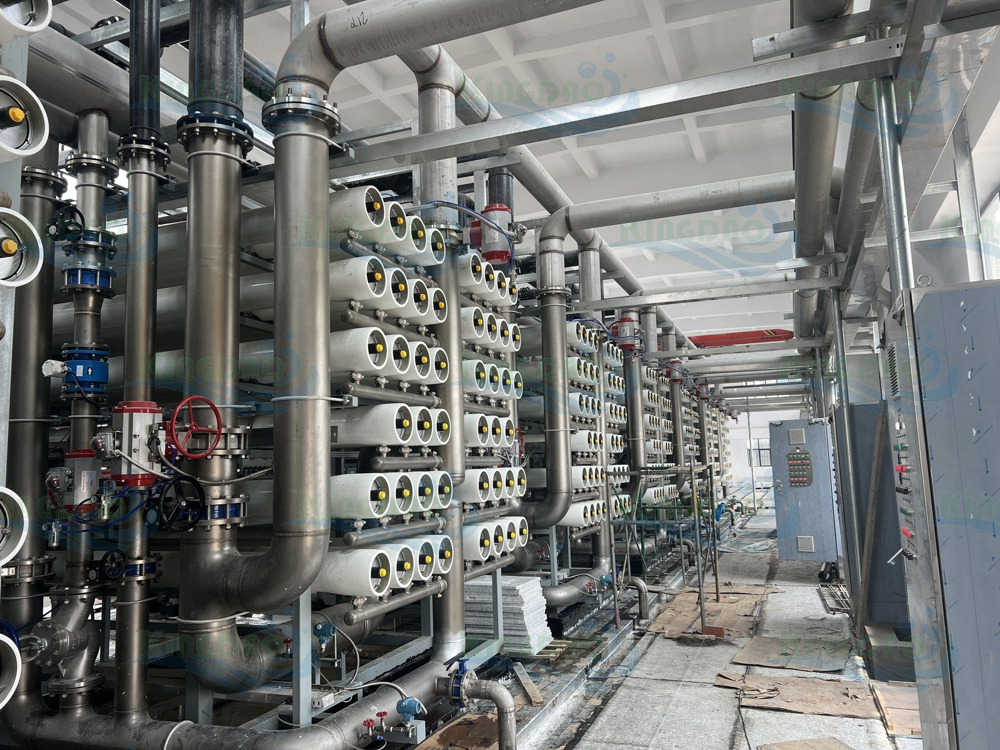
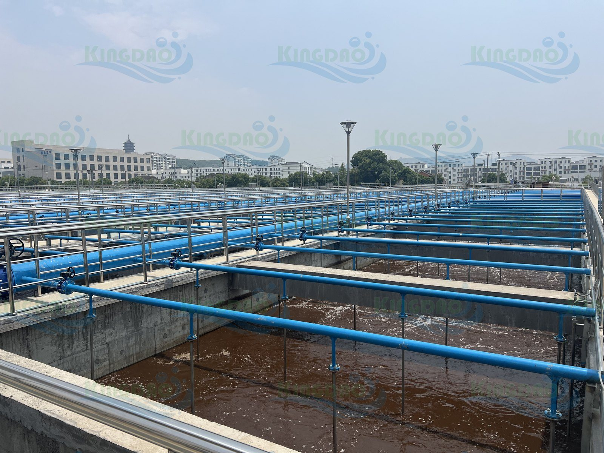
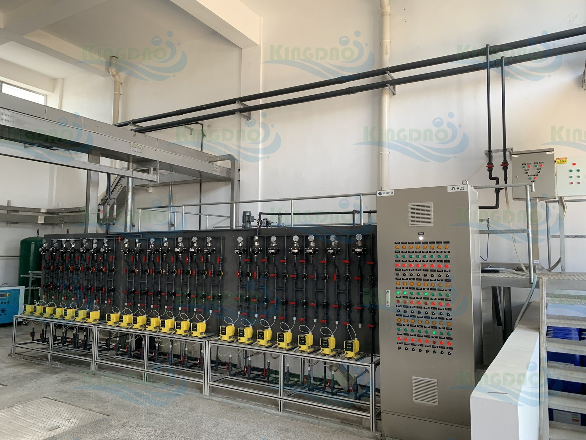
Each project was delivered as process design and technical consulting. Site photographs are being added progressively.
| Project | Country | Capacity | Process route |
|---|---|---|---|
| Xinzheng Longhu West WWTP | China | 100,000 m³/d (50,000 m³/d first stage) | Municipal sewage; staged construction for a growing district |
| Xingyang No.3 WWTP (expansion) | China | 50,000 m³/d | Modified Bardenpho + high-density clarifier + fibre disc filter |
| Sihanoukville Special Economic Zone WWTP | Cambodia | 15,000 m³/d | Domestic sewage; effluent CODcr ≤80 mg/L to GB18918-2002 |
| Juncheng Town WWTP and sewerage, Tangxian | China | 3,000 m³/d (1,500 built, 3,000 ultimate) | Inverted AAO; plate-and-frame sludge dewatering |
| Nanpuxi Town wastewater project | China | 2,200 m³/d (600 existing + 1,600 extension) | Class 1A plus Zhejiang DB33/2169-2018; 1,225 m² constructed wetland |
| Pengzhou Cifeng Town WWTP (new build) | China | 900 m³/d (2,000 m³/d ultimate) | A²/O train + stainless pressure filtration; effluent to Sichuan DB51/2311-2016. Our scope: feasibility study → preliminary design → construction drawings — replacing a 300 m³/d packaged plant that had reached end of life |
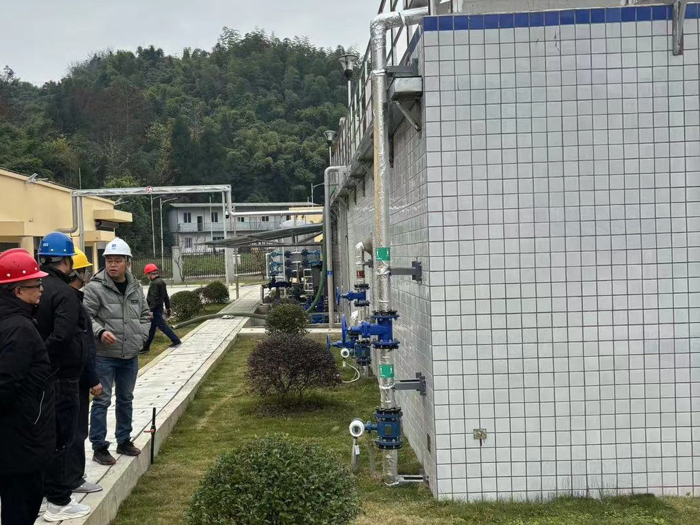
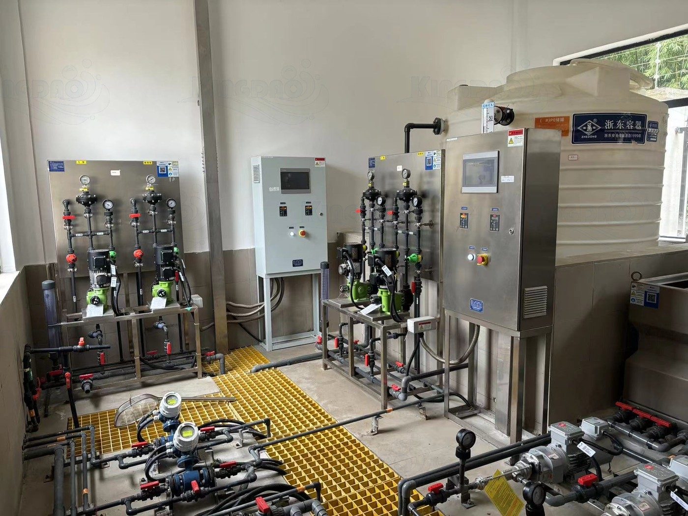
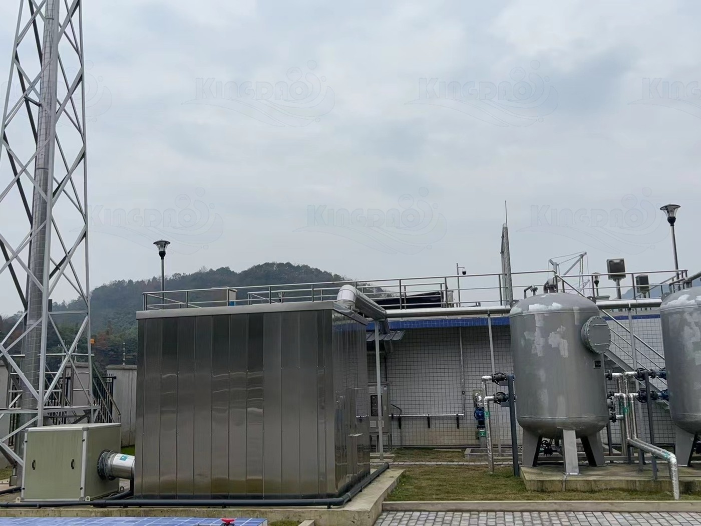
| Project | Country | Capacity | Process route |
|---|---|---|---|
| Dhaka Tannery Estate wastewater project | Bangladesh | 20,000 m³/d | Chromium, high salinity, high sulphide and ammonia; combined A+B oxidation ditch |
| Project | Country | Capacity | Process route |
|---|---|---|---|
| Shanquan dyeing wastewater plant | China | 35,000 m³/d, 50% reuse (70% ultimate) | High colour, high salinity, PVA desizing and alkali weight-reduction water |
| Vietnam industrial park wastewater project | Vietnam | 1,900 m³/d combined + 400 m³/d plating | Dyeing, resin buttons, electroless plating and electroplating, segregated at source |
| Project | Country | Capacity | Process route |
|---|---|---|---|
| Suichuan Industrial Park Phase I WWTP (expansion) | China | 20,000 m³/d (10,000 built, 20,000 ultimate) | Copper, nickel and cyanide; DAF + Fenton + hydrolysis-acidification + Bardenpho |
| Suichuan Industrial Park Phase II WWTP | China | 30,000 m³/d ultimate (10,000 first stage) | PCB, silicon materials, light textile, food processing and machinery in one park |
| Project | Country | Capacity | Process route |
|---|---|---|---|
| Changshu Food slaughter and processing relocation project | China | 1,200 t/d (peak 60 t/h) | High oil, high blood content and high COD; B/C ratio 0.4–0.5 |
| Zhangjiagang Gangcheng livestock slaughter, Phase I | China | 700 t/d (830–1,200 head/day) | Includes high-strength barn washing water |
| Project | Country | Capacity | Process route |
|---|---|---|---|
| Sansheng Township pig farm, Tianmenya | China | 280 m³/d | High organics, high suspended solids, high ammonia |
| Xinpu Town pig farm, Qianjin | China | 250 m³/d | Same process family |
| Project | Country | Capacity | Process route |
|---|---|---|---|
| Lu'an Guzhen Town WWTP, Phase II | China | 20,000 m³/d total (10,000 Phase II) | Down processing plus domestic sewage from 20+ factories in the park |
| Project | Country | Capacity | Process route |
|---|---|---|---|
| Karamay Baijiantan reuse project | China | 30,000 m³/d ultimate (20,000 first stage) | Industrial and landscape reuse, staged by quality tier |
| Project | Country | Capacity | Process route |
|---|---|---|---|
| Nanzhao No.2 waterworks | China | 50,000 m³/d | Inclined plate settling + V-filter + immersed ultrafiltration; turbidity <0.1 NTU |
| Project | Country | Capacity | Process route |
|---|---|---|---|
| Puyuan Road river water quality restoration | China | 300 m³/d packaged plant | AO fixed bed; grit separation, phosphorus removal, enhanced oxidation |
Full technical portfolio with process descriptions and reference letters is available on request. Contract values and commercial terms are not published.
Eight of the references above, drawn as they were built — layout, basin geometry and the space left for the next stage.
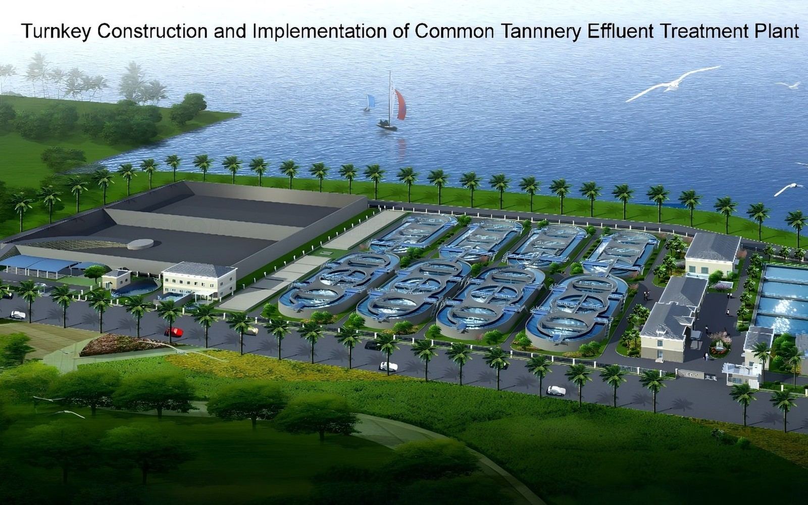
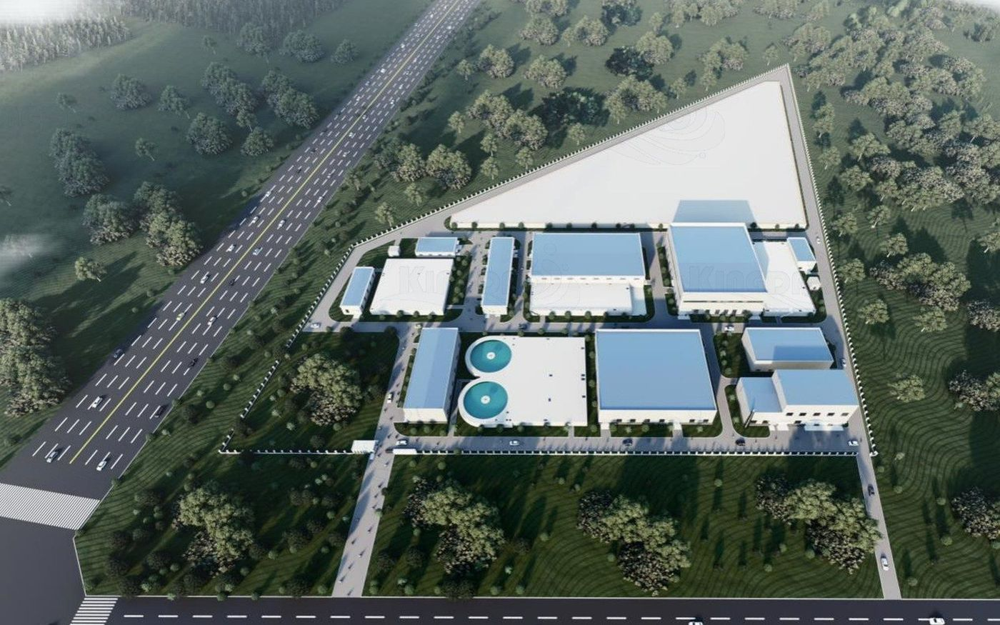
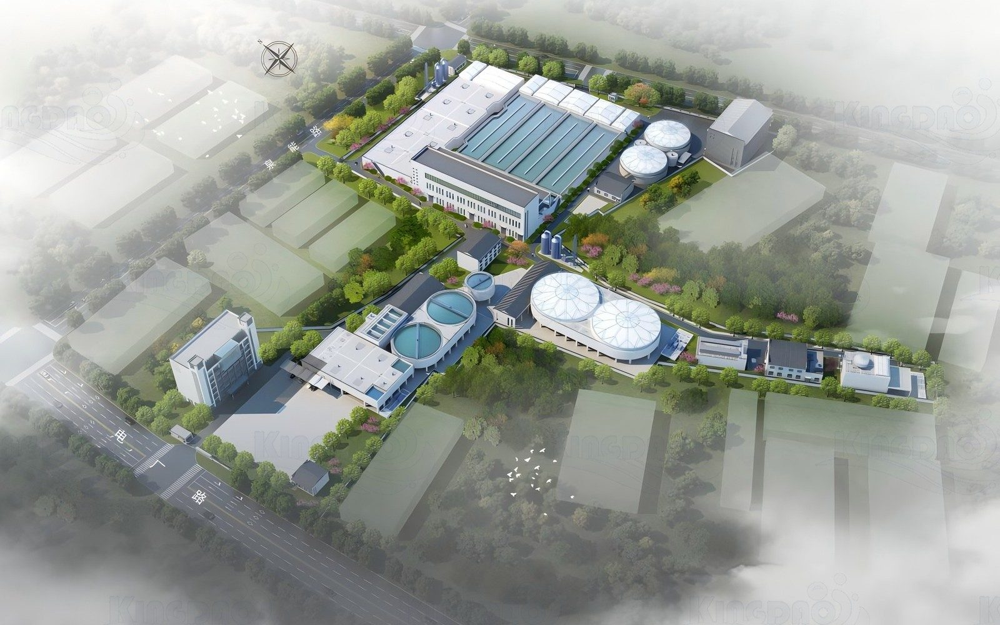
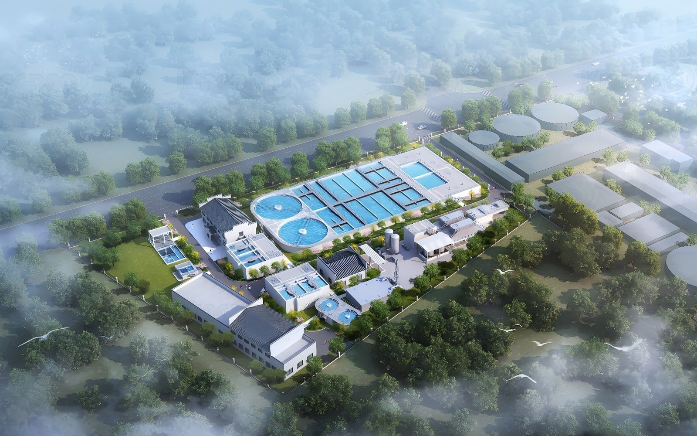
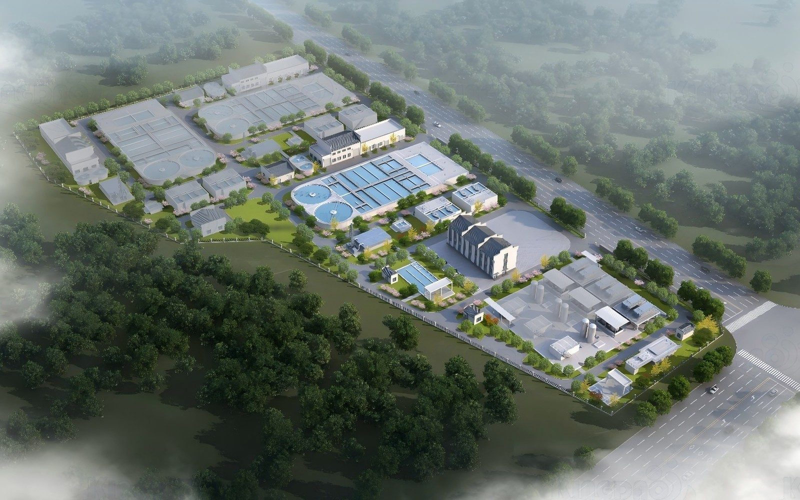
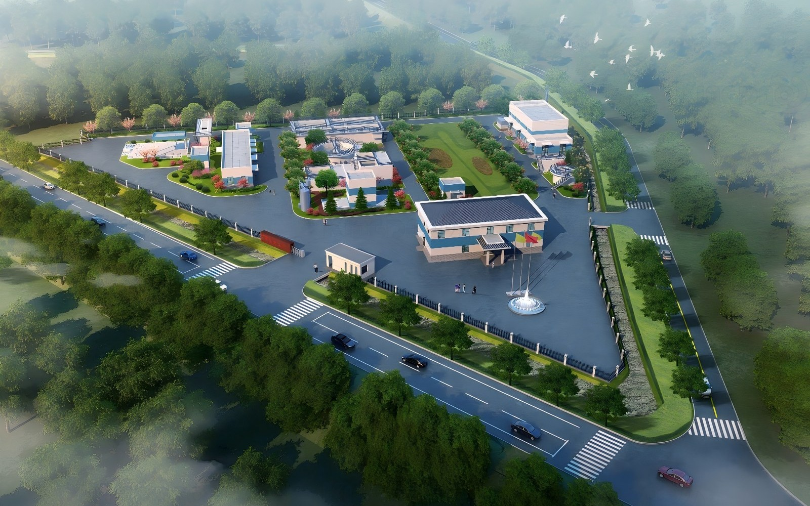
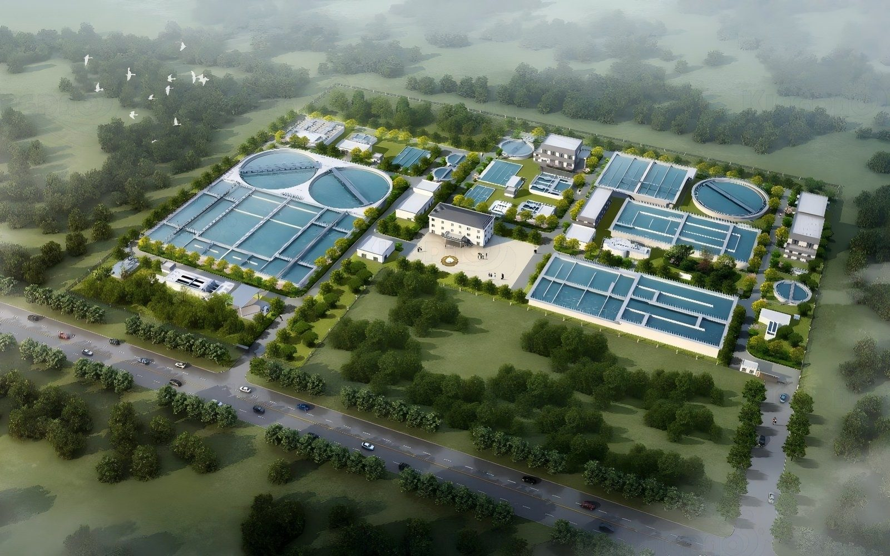
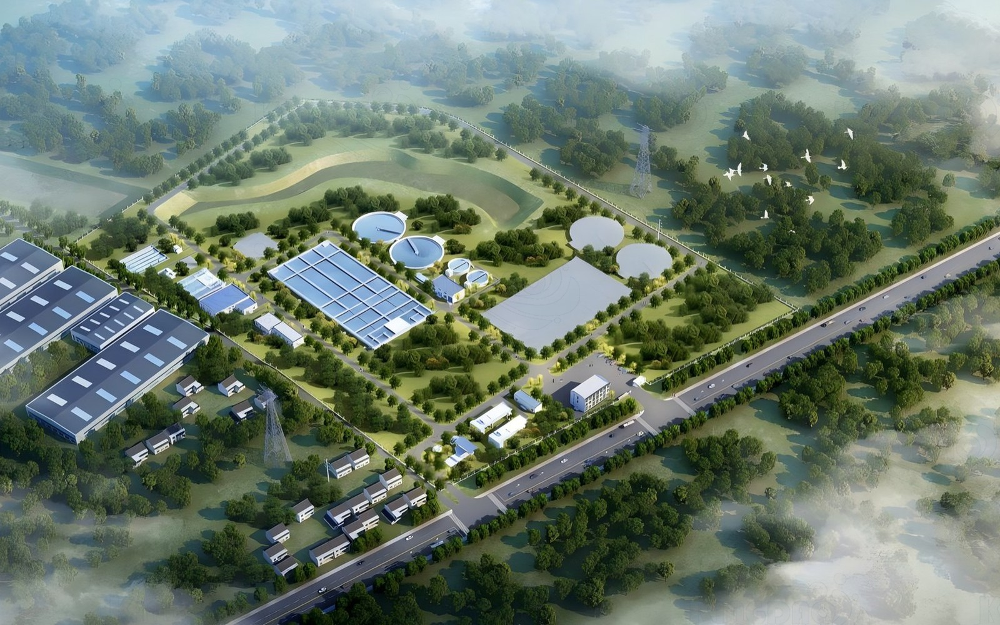
Industry by industry, with process routes, standards applied and capacities — useful when you need to show a client the technical backing behind your bid.
Xinzheng Longhu West municipal WWTP in China at 100,000 m3/d, built in stages with 50,000 m3/d in the first stage.
Process design and technical consulting: feasibility study, preliminary design and construction drawings, plus equipment selection and commissioning support. The equipment itself is manufactured in our own factory in Yixing.
China, Cambodia (Sihanoukville Special Economic Zone, 15,000 m3/d), Bangladesh (Dhaka Tannery Estate, 20,000 m3/d) and Vietnam (industrial park, 1,900 m3/d plus 400 m3/d of plating wastewater).
Ten: municipal sewage, tannery and leather, textile dyeing and printing, PCB and electronics, electroplating, slaughterhouse, livestock farming, down and feather processing, chemical and pharmaceutical, and water reuse.
From 250 m3/d - a pig farm plant - up to 100,000 m3/d for a municipal works. The process route is chosen from the wastewater type first, then the capacity sets the equipment size.
No. We publish capacity, process route and country; contract values and investment figures are commercial information and are not disclosed.